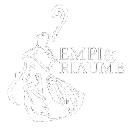

Je m’ appelle Sophie ARNAUD, je suis actuellement étudiante en deuxième année de BUT informatique.
Dans ce portfolio, vous allez découvrir mes projets et les compétences techniques que j'ai acquises
pendant mes études en BUT informatique. J'ai choisi de partager ces éléments pour vous montrer les
compétences que j'ai développées et ma créativité en tant qu'étudiante en informatique.

J’ai également d’autres centre d’intérêts comme la danse traditionnelle. En effet, je suis membre du groupe
Empi & Riaume de Romans depuis 2010 en tant que danseuse, aide monitrice pour le groupe des enfants. Je m’occupe
également de l’accompagnement de groupes étrangers sur le Festival International de Folklore de Romans.
Je suis aussi animatrice pour les collégiens et lycées de l’Aumônerie de l’Enseignement Public de Romans.
Ces activités m’ont permis d’acquérir de nombreuses compétences comme :
la communication, parfois difficile avec des enfants ou des personnes dont je ne parle pas la langues
l’esprit de groupe, avec les spectacle de danse où il faut être tous ensemble
Je vous invite à découvrir mes projets et mes compétences dans ce portfolio, plus précisément dans la
page "Projet en BUT". Vous découvrirai la description précise du travail réaliser en équipe et en individuel.